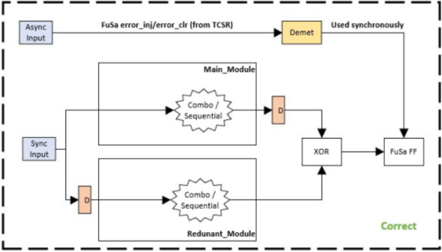
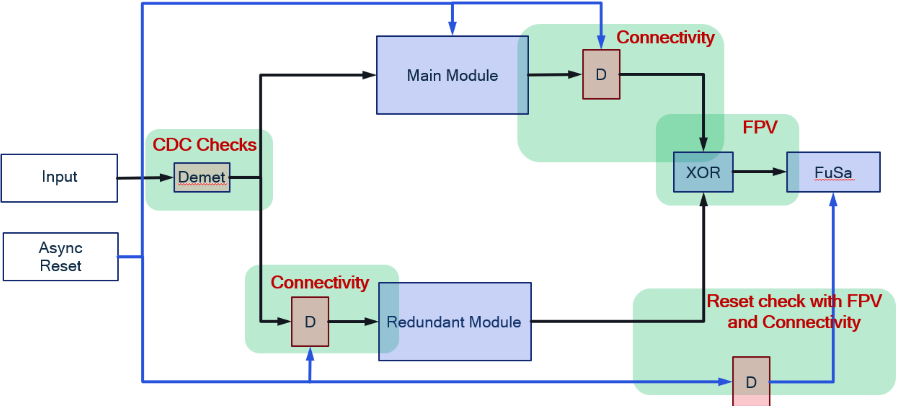

Who watches the watchman? FuSa Verification of DCLS Configuration through Formal and Static Checks
谁来监督监督者？基于 Formal 与静态检查的 DCLS 配置 FuSa 验证
简介
论文针对汽车功能安全中常用的 Dual Core Lock Step（DCLS）安全机制：每种实现变体都必须验证其能在现场检测并上报缺陷，但传统激励生成加仿真难以覆盖全部端口，lockstep 实例层次深导致控制困难，而随机错误注入又需要庞大框架且反馈偏晚。作者提出一套自动化的 DCLS 验证包，用 FPV 形式检查（针对 XOR 比较块与 FuSa F/F）配合静态连接性检查，在 RTL 阶段对 DCLS 配置做全面验证，尽早向设计者反馈以避免后期 ECO。该包已部署于包括 watchdog 实现和旗舰 automotive processor 中安全关键任务设计在内的多个 in-house 设计，并成功抓出部分老设计中的已知 bug，降低了验证工作量并提升质量。论文未给出量化指标，未来工作是将该验证包进一步集成进验证环境以支持 release qualification。
问题
DCLS 是汽车功能安全（ISO 26262/ASIL）常用的安全机制配置，但每种实现变体都需要验证其能在现场检测并报告缺陷；传统基于输入激励生成与仿真的方式难以达到全部端口 100% 覆盖，lockstep 实例在设计层次中较深导致端口可控性差，而随机错误注入需要庞大框架且难以提供早期反馈，容易拖到后期 ECO。论文要解决如何在 RTL 阶段对 DCLS 配置做全面、自动化的验证。
方法
提出自动化 DCLS 验证包：对 DCLS 结构中的 XOR 输出比较块与 FuSa F/F 施加 FPV（formal property verification）检查，并辅以静态连接性检查（connectivity checks），在每个 DCLS 配置上自动执行一组检查以确保其正确工作；无需激励生成与仿真即可覆盖端口，在 RTL 阶段 flush out bug，为设计者提供早期反馈。
关键结果
未在论文中说明
创新点
区别于依赖随机错误注入测量安全机制效率的大型框架，以及依赖激励生成+仿真且难以全覆盖的传统验证方式，本文将验证对象聚焦到 DCLS 结构本身，用 formal（FPV）+ 静态检查的组合实现免激励的完整验证，且自动化、可在 RTL 早期运行并跨多个设计复用。
团队参考意义
相关度级别：high
命中能力域：2.5 功能安全与安全机制 | 2.7 CyberSec/自动化
理由：论文核心是在 ISO 26262/ASIL 背景下对安全机制 DCLS 做验证，直接命中 2.5 '安全机制设计与验证、safety verification' 的核心技术；其自动化 formal+static 检查包的构建与部署思路与 2.7 的工程自动化、sign-off checklist/release gate 方向一致。虽然 DCLS 多用于计算模块而非团队的高速存储/互连 IP，但团队 IP 的安全机制同样需要可审计的验证证据，该'形式+静态检查'方法可迁移；同时可作为 2.6 fault injection/TFMEA 论证中安全机制有效性的补充手段。
建议动作：深入精读并做内部分享
中文全文

Who watches the watchman? FuSa Verification of DCLS Configuration through Formal and Static Checks
Avinash Kumar Pandey, Srobona Mitra, Sathish Kumar Manickam, Arunava Dutta, Deepak Baranwal
{avinpand, srobmitr, satishku, arundutt, dbaranwa}@qti.qualcomm.com
Qualcomm India Private Limited
摘要 - 双核锁步（DCLS）是确保汽车系统功能安全（FuSa）实现无缺陷运行所采用的最常见系统配置之一。然而，DCLS 配置的每一种实现变体都需要经过验证，以确保其能够在现场检测并报告缺陷。在本文中，我们提出了一套自动化的 DCLS 验证包，由一组形式化检查和静态检查组成，用于对 DCLS 配置进行全面验证。
我们还给出了将所提出的验证包应用于多个内部设计的结果，以证明其有效性。
I. INTRODUCTION
在交付面向安全关键应用的产品时，制造商必须遵守多项安全标准，例如面向铁路领域的 EN50129，以及面向汽车领域的 ASIL-A/B/C/D [1] 和 ISO 26262 [2][4]。汽车安全完整性等级（ASIL）的实施需要一套系统化的设计与验证流程，以支持安全覆盖。双核锁步（DCLS）[3] 在安全分析中能够对目标模块提供 100% 的覆盖率，因此需要建立相应的流程来对其进行验证。目前存在一些安全错误注入技术，其采用随机注入方式来衡量安全机制的效能，但需要一个庞大的框架。随着设计复杂度的不断增长，需要尽早向设计者提供反馈，以避免在后期实施工程变更指令（ECO）。
在 DCLS 配置中，使用了中央计算模块的一个副本（在图 1 中显示为 Main_Module 和 Redundant_Module）。该模块的两个实例被馈入相同的输入，并对二者对应的输出进行比较，以检测任何差异。延迟触发器（Delay F/F，如图 1 中的 D 模块所示）通常会被添加在特定位置，以减轻输入信号中毛刺的影响，从而避免共因失效。在制造过程中，如果任何缺陷被引入两个实例中的任意一个，并因此使其功能发生偏离，那么对这两个实例的输出进行异或（XOR）运算即可检测出该缺陷。该缺陷随后通过 FuSa F/F 得以通报。由于这两个模块在空间上彼此分开布置，同一缺陷同时出现在两个实例中的概率非常低。因此，这提供了强有力的保证，即只有正确的输出才会传播到下游逻辑。

II. IMPLEMENTATION
DCLS 验证包：尽管这是一种简单的输出比较型配置，但验证方面的挑战却是多方面的。要通过输入向量生成及随后的仿真来达到对所有端口 100% 的覆盖率，是相当大的挑战。此外，锁步（lockstep）实例可能位于设计层次结构中较深的位置，从而对这些端口的控制能力较弱。因此，我们提出了一套针对性的验证包，能够对 DCLS 配置执行完整验证，以便在 RTL 阶段清除其中的缺陷。以下是在每个 DCLS 配置上执行的验证检查列表，用以确保其正常工作。
| largets: ALL.status | largets: ALL.depth | largets: ALL.name | largets: ALL.vacuity | largets: ALL.witness | largets: ALL.e...e | largets: ALL.type |
|---|---|---|---|---|---|---|
| 1 | rtcu_wwdog.rtcu_wwdog_bind.assert_fusa_error_on_count_mismatch | 1 | 3 | el | assert | |
| 2 | rtcu_wwdog.rtcu_wwdog_bind.assert_fusa_error_on_state_mismatch | 1 | 3 | el | assert |
| largets: ALL.status | largets: ALL.depth | largets: ALL.name | largets: ALL.vacuity | largets: ALL.witness | largets: ALL.e...e | largets: ALL.type |

| status | name | vacuity | source_expr | Targets: ALL enable_expr | destination_expr | structural | path_delay |
|---|---|---|---|---|---|---|---|
| 1 | .rr_comparator_count_11 | 1 | u_rtcu_wwdog_core.o_count | 1'b1 | u_rtcu_wwdog_err_comparator.count | YES | 0 |
| 2 L | ...err_comparator_state_8 | 1 | u_rtcu_wwdog_core.o_state | 1'b1 | u_rtcu_wwdog_err_comparator.state | YES | 0 |
| 3 | ...tor_count_redundant_10 | 1 | u_rtcu_wwdog_core_redundant.o_count | 1'bl | u_rtcu_wwdog_err_comparator.count_redundant | YES | 0 |
| 4 | ...rator_state_redundant_9 | 1 | u_rtcu_wwdog_core_redundant.o_state | 1'bl | u_rtcu_wwdog_err_comparator.state_redundant | YES | 0 |
| status | name | vacuity | source_expr | Targets: ALL enable_expr | destination_expr | structural | path_delay |
图 4 概述了所提出的形式化检查与静态检查及其应用位置。


III. RESULT
我们已成功将所提出的验证包部署到多个设计中，其中包括一个看门狗实现，以及旗舰级汽车处理器中负责处理安全关键任务的设计。我们所提出的验证包还展示了其捕获部分较旧设计中存在的已知缺陷的能力。
.
IV. CONCLUSION
我们提出了一套验证包，用于通过形式化检查和静态检查对 DCLS 配置进行全面的验证。我们已成功将所提出的验证包部署到多个内部自研设计中。它降低了 DCLS 配置验证的工作量，同时提升了验证的质量。作为未来的工作，我们将进一步把这一自动化验证包集成到我们的验证环境中，以实现无缝应用和有效的发布鉴定。